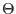

poscorr3xmm applies a correction to the centre of ELLBETA-PSF-derived source positions. The correction is of the order of 0.5 arcseconds and is calibrated as a cubic polynomial of the off-axis angle, , such that:
The offset, , is converted into corresponding offsets in RA and Declination.
The task runs on a source list, which must contain the columns RA and DEC, in an extension called SRCLIST, and the attitude keywords, RA_PNT, DEC_PNT and PA_PNT in the PRIMARY extension. The columns RA, DEC are updated directly with the modified source position.
There is an implicit assumption that source positions have been generated using the ELLBETA PSF. This can not be checked by the task.